Belal Alashqar
PhD student, Phystech School of Applied Mathematics and Computer Science
Model \(P(\eta = 1 \mid \xi = x)\) as a function of \(x\).
Example: versicolor (\(\eta = 0\)) vs virginica (\(\eta = 1\)), with \(d = 2\): \(x_1\) = petal length, \(x_2\) = petal width.
Assume: \(d = 1\); \(P(\eta = 1) = q \in (0, 1)\); given \(\eta = 0\), \(\xi \sim \mathcal{N}(a_0, \sigma^2)\); given \(\eta = 1\), \(\xi \sim \mathcal{N}(a_1, \sigma^2)\), with the same \(\sigma\).
Then
\[P(\eta = 1 \mid \xi = x) = \frac{1}{1 + e^{-(\beta x + \alpha)}},\] \[\text{where} \quad \beta = \frac{a_1 - a_0}{\sigma^2}, \qquad \alpha = \log\frac{q}{1 - q} - \frac{a_1^2 - a_0^2}{2\sigma^2}.\]Proof: Bayes' formula with a density, from Seminar 1.
An affine function \(\beta x + \alpha\) of \(x\), inside an S-shaped function.
Seminar 1's Gaussian naive Bayes had its own \(\sigma\) for each class and feature: here we add one assumption, the same \(\sigma\) for both classes. With \(d\) features, the same holds if the two classes share one covariance matrix.
Try the simplest model:
\(P(\eta = 1 \mid \xi = x) = \beta^T x + \alpha\)
Problem: for many \(x\), \(\beta^T x + \alpha\) is below 0 or above 1. It is not a probability.
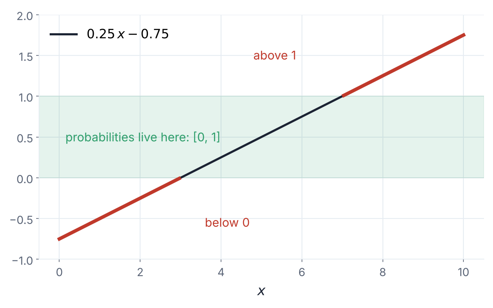
So \(P(\eta = 0 \mid \xi = x) = 1 - \operatorname{lgf}(\beta^T x + \alpha)\).
An affine function, passed through a one-dimensional link function (here \(\operatorname{lgf}\)):
this kind of model is called a generalized linear model.
Write \(p = P(\eta = 1 \mid \xi = x)\).
The log odds are an affine function of the features.
Assume both kinds of mistake cost the same. Then predict the more likely class, \(\hat{c}\):
Otherwise \(\hat{c} = 0\). At \(p = 0.5\) exactly, the choice is a convention.
To decide, we only need the sign of the affine function.
Models \(P(\eta \mid \xi)\) directly: the class given the features.
discriminative
Models the full joint distribution of the class and the features: \(P(\eta = c)\) and the distribution of \(\xi\) given \(\eta = c\).
generative
The probability of the observed data, seen as a function of the parameter \(\theta\).
For a pdf \(f_\theta\): \(\mathcal{L}(\theta) = \prod_{i=1}^{m} f_\theta\big(z^{(i)}\big)\), the density of the data.
The parameter that makes the observed data most likely. Same point for both: \(\log\) is strictly increasing.
Example: 100 data points, 60 ones and 40 zeros. Bernoulli model:
\(\mathcal{L}(\theta) = \theta^{60} (1 - \theta)^{40}\)
\(\log \mathcal{L}(\theta) = 60 \log \theta + 40 \log(1 - \theta)\)
\(\hat{\theta} = 0.6\)
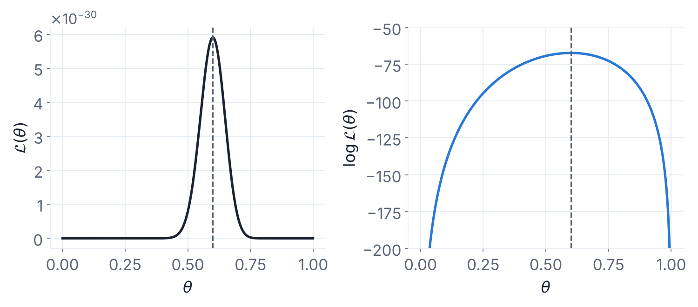
Part of the training in Seminar 1 was maximum likelihood, with a closed form, a formula:
The smoothed word and pixel probabilities of Seminar 1 are not maximum-likelihood estimates: Laplace smoothing changes them.
Fitting logistic regression will not be so easy.
Data: \(m\) items \(\big(x^{(i)}, c^{(i)}\big)\): the feature vector \(x^{(i)} \in \mathbb{R}^d\) and the label \(c^{(i)} \in \{0, 1\}\) of item \(i\), observed values of \(\xi^{(i)}\) and \(\eta^{(i)}\).
The labels given the features, as a function of \(\alpha\) and \(\beta\). The features are not modelled: the model is discriminative.
Assume (1) the labels are mutually conditionally independent given all the features; (2) each label \(\eta^{(i)}\) is conditionally independent of the other items' features, given its own \(\xi^{(i)}\); (3) the model holds for every item. Then
\[\mathcal{L}(\alpha, \beta) = \prod_{\{i:\; c^{(i)} = 0\}} \Big(1 - p_{\alpha,\beta}\big(x^{(i)}\big)\Big) \prod_{\{i:\; c^{(i)} = 1\}} p_{\alpha,\beta}\big(x^{(i)}\big), \qquad p_{\alpha,\beta}(x) = \operatorname{lgf}(\beta^T x + \alpha).\]The Bernoulli formula from Seminar 1, one factor per item:
\(\displaystyle \mathcal{L}(\alpha, \beta) = \prod_{i=1}^{m} p_{\alpha,\beta}\big(x^{(i)}\big)^{c^{(i)}} \Big(1 - p_{\alpha,\beta}\big(x^{(i)}\big)\Big)^{1 - c^{(i)}}\)
\(\displaystyle \log \mathcal{L}(\alpha, \beta) = \sum_{i=1}^{m} \Big[c^{(i)} \log p_{\alpha,\beta}\big(x^{(i)}\big) + \big(1 - c^{(i)}\big) \log\Big(1 - p_{\alpha,\beta}\big(x^{(i)}\big)\Big)\Big]\)
Iris: 100 flowers. With \(\alpha = 0\), \(\beta = 0\), every \(p_{\alpha,\beta}(x^{(i)}) = 0.5\), so
\(\mathcal{L}(0, 0) = 0.5^{100} \approx 7.9 \cdot 10^{-31}\) but \(\log \mathcal{L}(0, 0) \approx -69.3\).
A product of many numbers between 0 and 1 is tiny: numerical problems. A sum of logs is not.
In Seminar 1, training was one formula: counts and averages. Can we write a formula for the maximum \(\hat{\alpha}, \hat{\beta}\) here?
No.
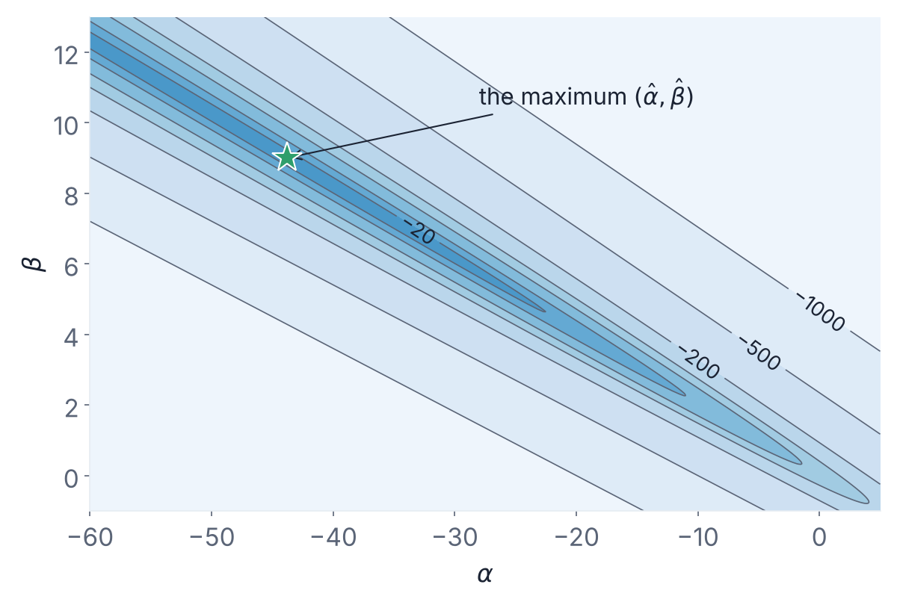
The partial derivatives of the log-likelihood:
Try it: show that \(\operatorname{lgf}'(\ell) = \operatorname{lgf}(\ell)\,\big(1 - \operatorname{lgf}(\ell)\big)\), then use the chain rule.
Start at \(\alpha^{(0)} = 0\), \(\beta^{(0)} = 0\). For \(t = 1, 2, \dots\), a fixed number of steps:
\[\alpha^{(t)} = \alpha^{(t-1)} + \gamma\, \frac{\partial \log \mathcal{L}}{\partial \alpha}\big(\alpha^{(t-1)}, \beta^{(t-1)}\big),\] \[\beta^{(t)}_j = \beta^{(t-1)}_j + \gamma\, \frac{\partial \log \mathcal{L}}{\partial \beta_j}\big(\alpha^{(t-1)}, \beta^{(t-1)}\big) \quad \text{for every } j.\]\(\gamma > 0\): the learning rate, the size of the steps. Small steps uphill, in the direction of the gradient.
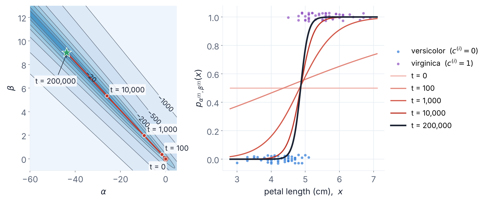
Iris, petal length only. \(\gamma = 0.003\), 200,000 steps: \(\alpha^{(200\,000)} \approx -43.7\), \(\beta^{(200\,000)} \approx 8.98\); the maximum: \(\hat{\alpha} \approx -43.8\), \(\hat{\beta} \approx 9.00\).
Slow! The hill is a long, narrow ridge: many small steps.
Features (\(d = 2\)): \(x_1\) = petal length, \(x_2\) = petal width, in cm.
Problem 1: setosa (\(c = 0\)) vs versicolor (\(c = 1\)).
Problem 2: versicolor (\(c = 0\)) vs virginica (\(c = 1\)), as in Part A.
Which problem is harder? Can you draw a line between the two species?
Gradient ascent from Part B, now with \(d = 2\) features. All \(m = 100\) flowers, \(\gamma = 0.002\).
| step \(t\) | \(\alpha^{(t)}\) | \(\beta^{(t)}_1\) | \(\beta^{(t)}_2\) | flowers on the wrong side |
|---|---|---|---|---|
| 100 | \(-2.40\) | 0.76 | 1.06 | 0 |
| 1,000 | \(-6.78\) | 1.87 | 2.82 | 0 |
| 10,000 | \(-11.74\) | 3.25 | 4.85 | 0 |
The data are linearly separable if a line (in \(d\) dimensions: a hyperplane) separates the two classes with no mistakes on the data.
Problem 1 is linearly separable.
The decision boundary is the set \(\{x \in \mathbb{R}^d : \beta^T x + \alpha = 0\}\). The decision rule (Part A) predicts \(\hat{c} = 1\) on one side and \(\hat{c} = 0\) on the other.
With \(d = 2\): the line \(\beta_1 x_1 + \beta_2 x_2 + \alpha = 0\).
How to draw it, two ways:
Problem 1 at \(t = 100{,}000\): \(x_2 \approx 2.44 - 0.684\, x_1\). The other contour lines, \(p_{\alpha,\beta}(x) =\) a constant, are parallel lines.
Three different lines. Each one puts all 100 flowers on the right side.
For separable data the separating line is not unique.
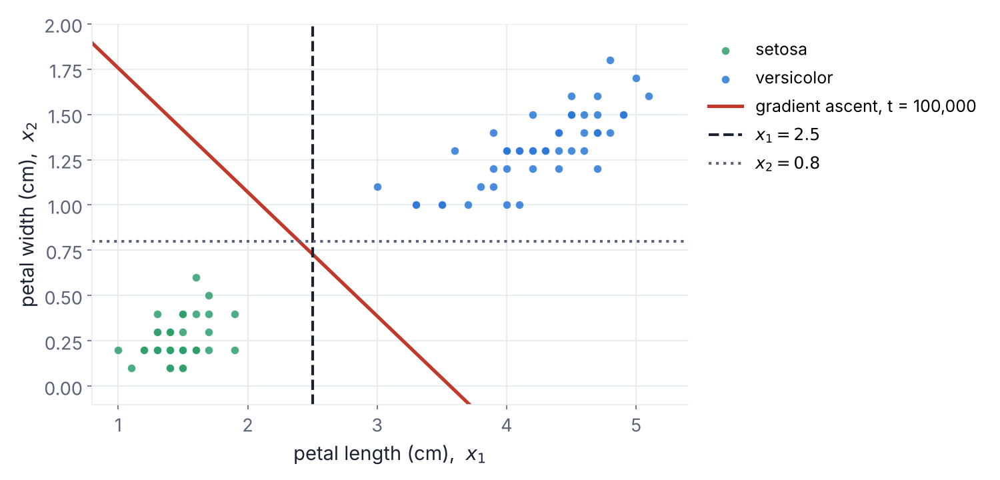
\(\gamma = 0.002\), 1,000,000 steps. The maximum:
\(\hat{\alpha} \approx -45.27\), \(\hat{\beta} \approx (5.75,\ 10.45)\)
6 of 100 flowers on the wrong side. Not linearly separable.
Thin lines: \(p_{\hat\alpha,\hat\beta}(x) = 0.1,\ 0.25,\ 0.75,\ 0.9\). Red: the boundary \(x_2 \approx 4.33 - 0.551\, x_1\).
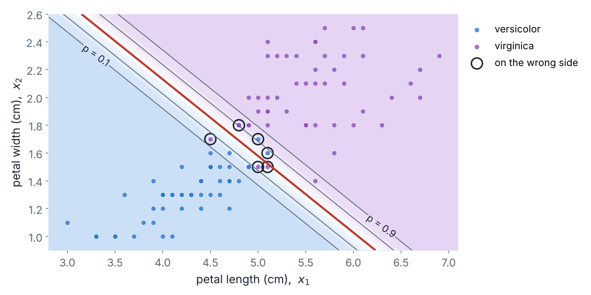
A line gets 6 flowers wrong. Can some curve, however wiggly, put all 100 flowers on the right side?
No! Flower 71 (versicolor) and flowers 127 and 139 (virginica) all measure
\(x = (4.8,\ 1.8)\).
Same features, different labels: every classifier gets at least one of them wrong.
That is why we model a probability: at this \(x\), the honest answer is neither 0 nor 1.
The polynomial features of degree \(K\): \(\phi(x)\) = all products \(x_1^{k_1} x_2^{k_2}\) with \(1 \le k_1 + k_2 \le K\). For \(K = 2\):
\[\phi(x) = \big(x_1,\ x_2,\ x_1^2,\ x_1 x_2,\ x_2^2\big).\]Example: only \(x_1^2, x_2^2\), with \(\beta = (1, 1)\), \(\alpha = -R^2\): the boundary \(x_1^2 + x_2^2 = R^2\) is a circle. Number of features: 5 for \(K = 2\), 14 for \(K = 4\), 65 for \(K = 10\).
Made-up data: 200 points in a square. Class 0 inside the circle with \(R = 1\), class 1 outside.
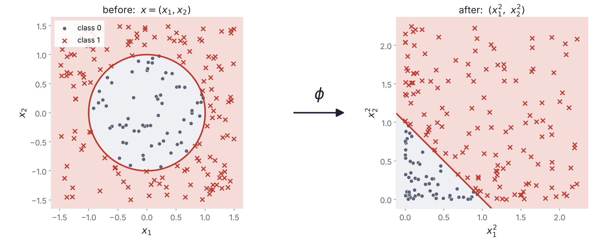
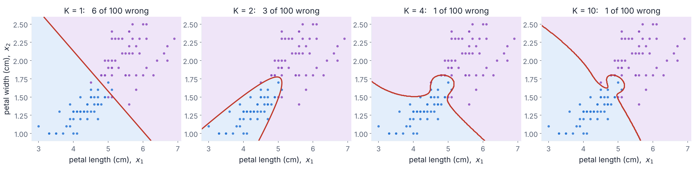
Made-up data, so that we can make many new items. Class 0: \(\xi_1, \xi_2\) independent \(\mathcal{N}(0, 1)\). Class 1: independent \(\mathcal{N}(0, 2^2)\).
40 training items, 5,000 test items.
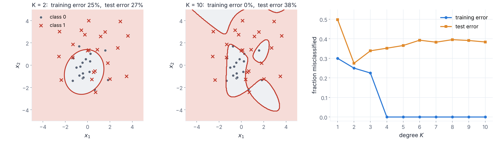
A model that fits the training data very well but is too complex overfits: low training error, but a higher test error (the fraction of the test items misclassified, 1 − accuracy).
Opens notebooks/problem1.ipynb and notebooks/problem2.ipynb in JupyterLab, started in the project folder (port 8888).
Challenge: in the made-up data, use 400 training items instead of 40. What happens to the gap between the two curves?